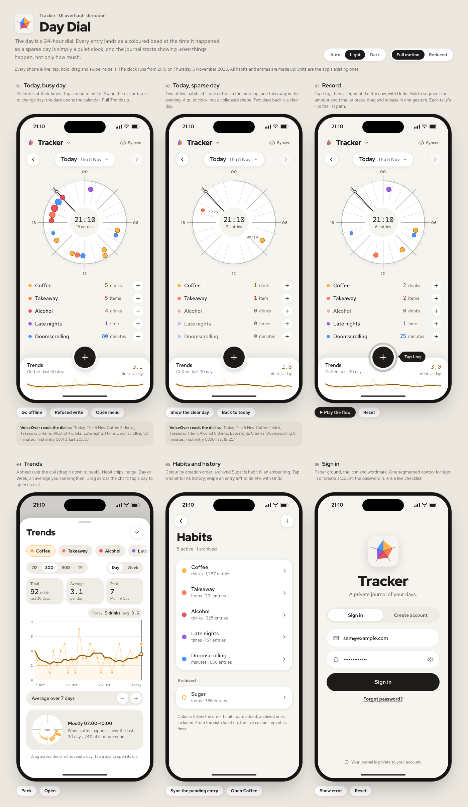
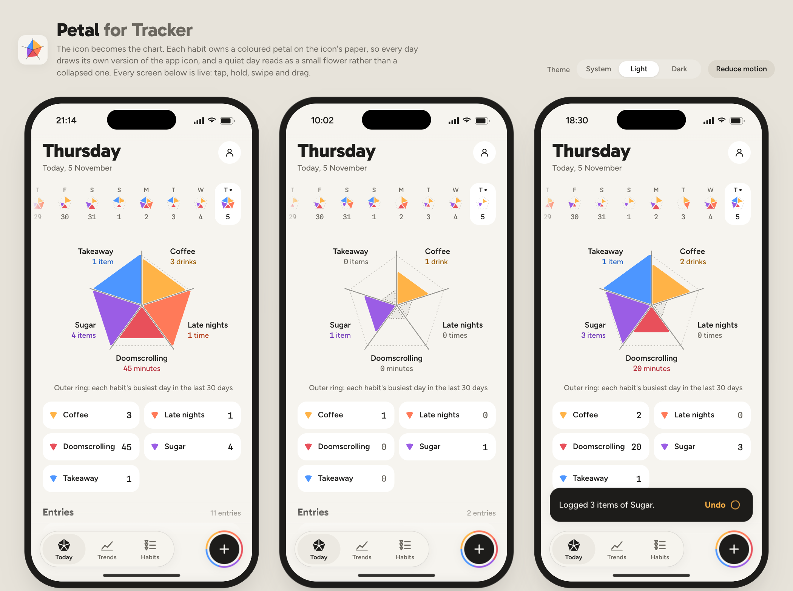
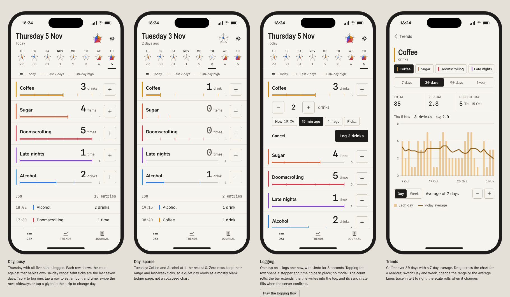

Three complete directions for the new design system and UI. All three use the new icon's paper, ink and five colours, have light and dark themes, show a quiet day as data, and log an entry in one tap. Every phone in the live mock-ups responds to taps, drags and swipes. All habits shown are made up.
You said the app is a journal for understanding yourself, with insights into triggers to come. Day Dial is the only direction that records when each entry happened. That is the raw material for trigger, calendar and Health insights, and it costs no extra reads. A quiet day is simply a quiet clock, so it can never look broken. The Log button fans out into the icon's own pentagon.
Runner-up: Ledger, if you would rather have the fastest and plainest instrument. It is the cheapest to keep correct with 6 to 40 habits.
The day is a 24-hour dial. Every entry is a coloured bead at the time it happened. Habit rows with a + sit beneath. Trends slides up as a sheet and includes "when it usually happens".

r2-today)The icon becomes the chart. Each habit owns a coloured petal, so every day draws its own version of the app icon, and the day strip shows a small icon for each day. Tiles under the chart log in one tap.

A precise instrument. The day is a ruled ledger with one row per habit: the count in mono and a thin trace of that habit's last 30 days. + logs one; tapping a row opens a stepper with time chips in place, with no dialog.
